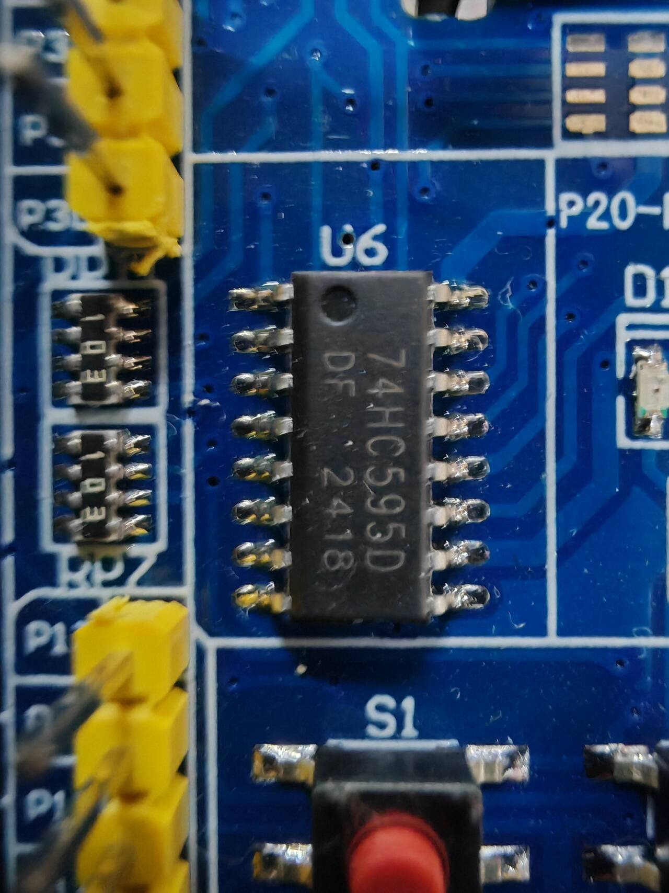
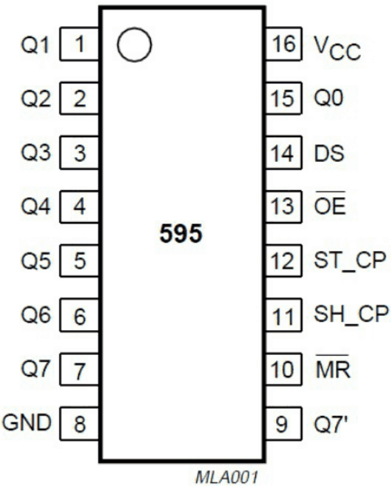

程序实验7&8.IO扩展-LED点阵
IO扩展-74HC595
外围设备占用的IO口较多，而51单片机提供的IO口非常有限，如果想要连接更多的外围设备，就需要通过扩展IO来实现。这里使用的是74HC595的串转并芯片。
74HC595芯片介绍
74HC95是一个8位串行输入、并行输出的位移缓存器，其中并行输出位三态输出（高电平、低电平和高阻抗）。
Q0~Q7为并行数据输出，Q7’为串行数据输出，DS为串行数据输入。通过串行数据输出连接串行移位输入可以级联多个595芯片，从而实现IO扩展功能。
MR为低电平复位引脚，名称上面一杠说明低电平有效。
SH_CP为移位寄存器的时钟输入，控制移位寄存器一位一位地移动存储数据；ST_CP为存储寄存器的时钟输入，控制移位寄存器中的八位数据一次性全部存储到存储寄存器当中。存储寄存器的输出连接到并行输出口Q0~Q7。
OE为使能引脚，如果该信号为低电平则并行输出口可以输出。
硬件介绍

在51单片机中，595芯片被用于LED点阵。LED点阵的原理与矩阵按键类似，对行共阳、列共阴二极管来说，列线路低电平、行线路高电平时相应的二极管被点亮。
595芯片的两个时钟输入分别连接P35-36引脚，串行输入连接P34引脚，用于接受并行输出的数据。并行输出引脚与LED点阵行线路引脚一一对应。
实验7-1 IO扩展
实现功能：通过72HC595模块控制LED点阵以行为单位循环滚动显示。
|
|

使用LED点阵需要用黄色跳线帽插在GND和OE上将OE接地，使并行输出口有效。不使用时则插在OE和VCC上。
实验7-2 IO扩展（595级联）

当多个595芯片级联时，数据会以字节为单位从前一个芯片推向后一个芯片。以上图为例，当四个字节的数据存入移位寄存器后，在转入存储寄存器时，最后一个字节在该芯片并行输出，而前三个字节溢出到串行输出口传输到第二个芯片。以此类推，第二个芯片并行输出倒数第二个字节，前两个字节溢出到第三个芯片；第三个芯片并行输出第二个字节，第一个字节溢出到最后一个芯片并行输出。其中前两个芯片分别控制前八行、后八行，后两个芯片分别控制前八列、后八列。
实现功能：通过72HC595模块控制LED点阵以行为单位循环滚动显示。
|
|
LED点阵
LED点阵介绍
LED点阵是由发光二极管排列组成的显示器件，被广泛应用于汽车报站器、广告屏等。
LED点阵每一行的阳极并联在一起，每一列的阴极并列在一起，行为高电平、列为低电平的二极管被点亮。硬件结构在上一节已经介绍过。
实验8-1 点亮一个点
实现功能：在点阵屏上点亮一个点，以左上角的点为例。
|
|
实验8-2 显示数字
实现功能：在点阵屏上显示一个数字。
数字、文字等点阵图像较为复杂，可以通过字模提取软件方便地生成点阵数据。
软件界面：

基本操作-新建图像，根据点阵屏大小选择行列数，生成空白点阵：

模拟动画-放大格点：

在点阵上点选需要点亮的点：

参数设置-其他选项，取模方式根据扫描方式选择横向或纵向，横向取模数据为每一行点亮对应列LED的数据，纵向取模数据为每一列点亮对应行LED的数据，字节倒序根据开发板接线顺序按需勾选，输出数据的数位对应点阵上的行和列上高下低、左高右低时不勾选，反之则勾选：

取模方式-C51格式，在点阵生成区生成字模数据。

|
|
实验8-3 显示数字（595级联）
本实验采用横向取模。8×8点阵上面对应595芯片并行输出的高位，下面对应低位，而16×16点阵上面为低位，下面为高位，因此勾选字节倒序，取模参数如下：

当对16×16点阵横向取模时，取模软件对每一行先取前八列数据为一个字节，再取后八列数据为一个字节，从上往下，得到取模结果：

|
|